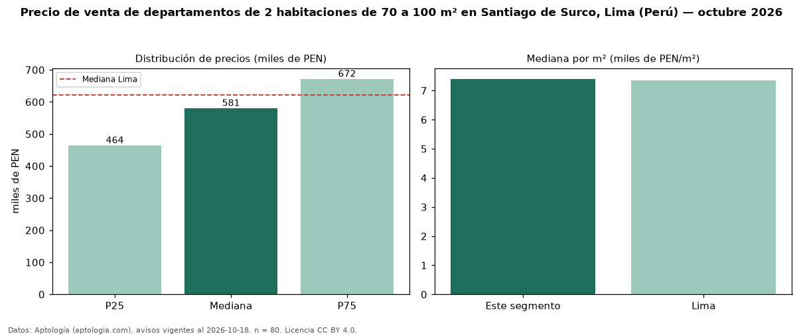

Precio de venta de departamentos de 2 habitaciones de 70 a 100 m² en Santiago de Surco, Lima (Perú) — octubre 2026
PEN 580.610 es el precio mediano de departamentos de 2 habitaciones de 70 a 100 m² en venta en Santiago de Surco, Lima (Perú) (n = 80 avisos). Prácticamente coincide con la mediana de los departamentos de 2 habitaciones en venta de Santiago de Surco (PEN 584.720, n = 229); este segmento reúne el 35 % de esos avisos. Por metro cuadrado, la mediana es PEN 7.400/m² (n = 79), 1 % por debajo de los departamentos de 2 habitaciones en venta de Santiago de Surco (PEN 7.445/m²). El área mediana anunciada es 80 m². La mediana de todos los departamentos en venta de Lima es PEN 621.600 (−7 % de diferencia). La mitad central de los avisos va de PEN 464.500 a PEN 671.830 (razón 1,4), una dispersión moderada. Datos: Aptología (aptologia.com), CC BY 4.0 — https://www.aptologia.com/pe/venta/lima/santiago-de-surco. Archivos: PDF, CSV con las cifras y gráfica PNG.

| Avisos únicos | 80 |
|---|---|
| Percentil 25 | COP 464.500 |
| Mediana | COP 580.610 |
| Percentil 75 | COP 671.830 |
| Mediana por m² | COP 7.400 |
Fuente: avisos vigentes de portales inmobiliarios recopilados por Aptología, deduplicados (mínimo 30 avisos únicos por celda). Precios pedidos, no cerrados. Fecha: 2026-10-18.